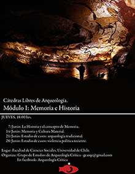
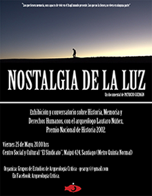
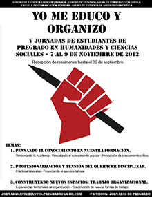
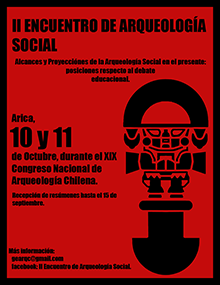
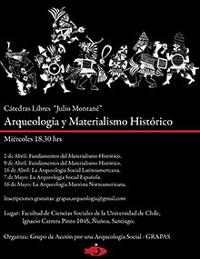

La historia de Aikén
El Grupo de Estudios de Arqueología Crítica (2010-2013)
Aikén comenzó a gestarse el año 2010, cuando varios de los actuales integrantes participamos del encuentro de Arqueología Social Latinoamericana realizado en el marco del XVII Congreso Nacional de Arqueología Argentina, en Mendoza. Esta experiencia nos motivó a conformamos como agrupación, con una perspectiva crítica del quehacer disciplinar y con la vocación de reivindicar un sentido social para el trabajo arqueológico. En ese período, como estudiantes de pregrado de la Universidad de Chile, y bajo el nombre de Grupo de Estudios de Arqueología Crítica (GEAC), nos planteamos como primera tarea la autoformación en perspectivas alternativas respecto de lo que recibíamos en las cátedras de la carrera. Al mismo tiempo, organizamos distintas actividades, entre ellas conversatorios y foros, abarcando temas como las limitaciones y posibilidades de la institucionalidad científica a través de Fondecyt, así como su participación en los Estudios de Impacto Ambiental. En ese marco organizamos también una primera reunión de arqueologías críticas para discutir respecto la situación actual de la disciplina en Chile, en las Jornadas del Departamento de Antropología de la Universidad de Chile, en San Felipe. En 2011, condensamos nuestra perspectiva de entonces en un trabajo denominado “Perspectiva estudiantil hacia una Arqueología Crítica en Chile”, presentado en el XVI Congreso Mundial de la Union Internationale des Sciences Préhistoriques et Protohistoriques (UISPP), en Florianópolis
Los años siguientes desarrollamos distintas iniciativas encaminadas a abrir las reflexiones en arqueología y vincularlas con otras disciplinas, así como espacios distintos del académico: en 2012 pudimos exhibir el documental “Nostalgia de la Luz”, de Patricio Guzmán, asociado a una mesa discusión en torno a memoria, historia reciente y cultura material, en el centro cultural El Sindicato. También participamos, junto a otras agrupaciones universitarias, como organizadores de las V Jornadas de Estudiantes de Pregrado en Humanidades y Ciencias Sociales, y realizamos un ciclo de Cátedras Libres de Arqueología, con el propósito de abrir un espacio de escuela abierta de autoformación, abordando distintos contenidos vinculados a los conceptos de Memoria e Historia.
Ese año la organización recibe a nuevos integrantes, arqueólogos egresados que compartían las mismas inquietudes respecto de la necesidad de desarrollar una praxis crítica. Con esta nueva composición y paralelamente al XIX Congreso Nacional de Arqueología Chilena en Arica, organizamos el II Encuentro de Arqueología Social Latinoamericana, que contó con participantes de Chile, Argentina y Bolivia.
Grupo de Acción por una Arqueología Social (2013-2016)
Durante el año 2013, el GEAC cambió su nombre a Grupo de Acción por una Arqueología Social (GRAPAS), en tanto pensamos que su objetivo principal había dejado de ser la autoformación. En ese momento, realizamos una investigación autogestionada con el objetivo de evaluar el desarrollo histórico de la Arqueología Social en Chile, desde los años sesenta hasta la actualidad, lo cual concluyó en una ponencia presentada en las IV Jornadas del Departamento de Antropología de la Universidad de Chile, así como en el simposio “Todas las Tierras. Crítica y reivindicación de la Arqueología Social Latinoamericana”, en el marco del XVIII Congreso de Arqueología Argentina, en La Rioja. El mismo año, realizamos una entrevista al arqueólogo peruano Luis Guillermo Lumbreras, la cual pronto será publicada.
En 2014 retomamos la realización de las Cátedras Libres, en esta ocasión en torno a temáticas de Arqueología y Materialismo Histórico. Elaboramos una reflexión denominada “La protección del patrimonio arqueológico en Chile: entre la ineficacia legal, el desarrollo económico y las demandas sociales”, la cual fuimos invitados a presentar en las II Jornadas del Núcleo de Sociedad y Medio Ambiente, en la Universidad de Chile. Ese año también participamos de la organización de la VII Reunión de Teoría Arqueológica de América del Sur (TAAS), realizada en San Felipe. En dicha instancia se organizó la Mesa Redonda titulada “¿Diálogos o monólogos?, reflexiones en torno al quehacer de la Arqueología y la realidad social chilena”. Además, y en el marco de la coordinación del simposio “Arqueología y Educación” presentamos los resultados de una nueva investigación autogestionada respecto de los contenidos curriculares de la educación formal, que se tradujo en una ponencia denominada “Evaluación crítica de discursos acerca de la Prehistoria en textos escolares chilenos”.
El año 2015 coordinamos el simposio “Arqueología y Política: conflictos y posicionamiento disciplinar”, en el marco del XX Congreso Nacional de Arqueología Chilena en Concepción, el cual permitió desarrollar discusiones en torno a una variedad amplia de temáticas. En el mismo congreso, organizamos también una Mesa Redonda con invitados de distintas disciplinas y sectores de la sociedad civil regional, titulada “Arqueología desde la vereda del frente: cultura material y memoria en el Biobío”. Ese año, igualmente vió finalmente la luz el artículo “Arqueología Social en Chile: desarrollo histórico y valoración crítica del proyecto disciplinar”, en el Boletín de la Sociedad Chilena de Arqueología, que condensaba los resultados de la investigación desarrollada en 2013.
Centro de Estudios Arqueológicos e Históricos Aikén (2016 – actualidad)
Finalmente, el año 2016 decidimos adquirir la personalidad jurídica, constituyéndonos como Centro de Estudios Arqueológicos e Históricos Aikén, una corporación sin fines de lucro cuyo objetivo es desarrollar investigación en torno a la arqueología e historia latinoamericana, sus desarrollos teóricos y la historia reciente de nuestro continente. En la actualidad, desarrollamos dos líneas de trabajo enfocadas en contribuir al desarrollo teórico respecto de la prehistoria del Sur de Chile y de la auto-reflexión crítica disciplinar. La primera dice relación con la historia de las poblaciones costeras de los canales septentrionales, el mar interior y el archipiélago de Chiloé. La segunda, busca profundizar en el rol de las mujeres en el surgimiento de la arqueología como disciplina institucionalizada en el país, desde una perspectiva feminista.